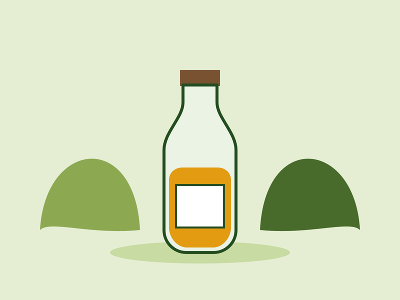
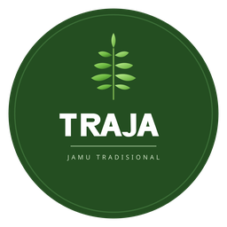
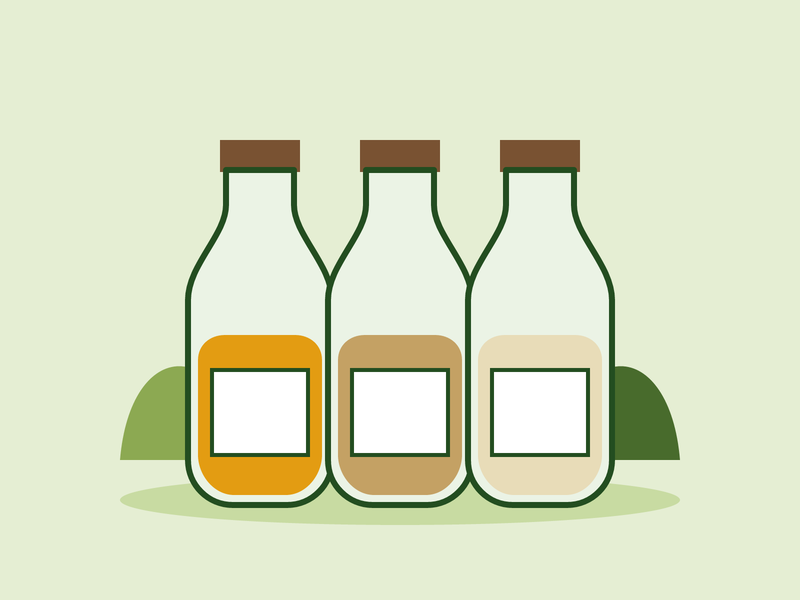
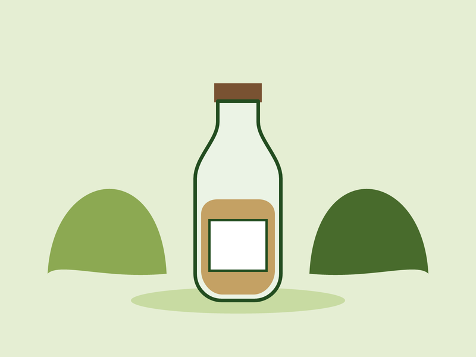
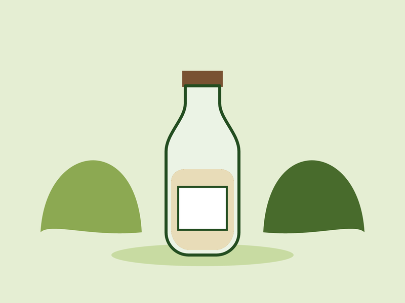

Jamu Temulawak TRAJA
Jamu dengan rasa khasnya yang hangat dan sedikit pahit.
- Bahan
- Temulawak, jahe, asam jawa, gula aren
- Manfaat
- Membantu menjaga stamina dan kesehatan pencernaan
Rp15.000
Beli Sekarang
TRAJA Pesan SekarangTRAJA menyediakan pilihan jamu tradisional dengan khasiat, harga terjangkau, serta pilihan paket bundling yang praktis.
Lihat Produk
Pilih jamu favorit Anda dari tiga pilihan jamu tradisional yang tersedia.

Jamu dengan rasa khasnya yang hangat dan sedikit pahit.
Rp15.000
Beli Sekarang
Jamu dengan aroma segar dan rasa pedas hangat dari rimpang kencur pilihan.
Rp15.000
Beli Sekarang
Jamu yang terasa manis lembut, dengan perpaduan beras dan kencur yang disukai banyak orang.
Rp15.000
Beli SekarangNikmati pilihan beberapa jamu sekaligus melalui paket bundling yang praktis dan nikmati harga yang lebih murah.
Paket Hemat
Pilih 2 jenis jamu dari produk yang tersedia.
Total paket Rp23.000
Beli PaketPaket Lengkap
Temulawak + Kencur + Beras Kencur
Total paket Rp40.000
Beli Paket“Jamu Temulawaknya enak dan informasi produknya juga sangat jelas. Saya jadi tahu bahan dan manfaatnya sebelum membeli.”
“Saya memilih paket 3 jamu karena bisa mendapatkan Temulawak, Kencur, dan Beras Kencur sekaligus. Praktis dan harganya lebih murah.”
“Harga jamu masih tergolong murah.”
Temukan pilihan jamu tradisional favorit Anda dan nikmati kemudahan membeli satuan maupun dalam paket bundling.